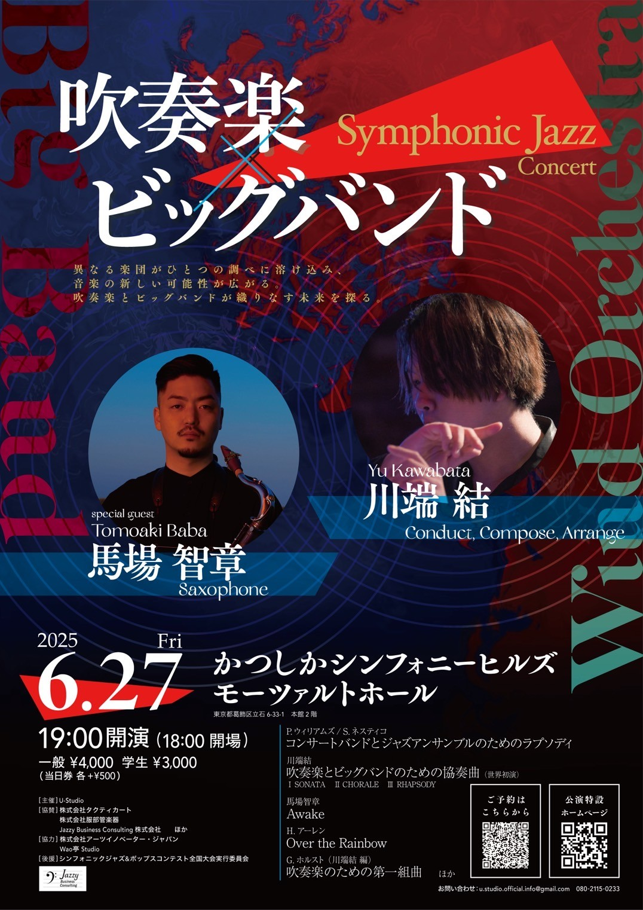

Profile

1999年東京都生まれ。マルチパーカッショニスト、ドラマー。高校で吹奏楽部に入部し、パーカッションを始める。 2018年慶應義塾大学に入学後、同大学のビッグバンドLight Music Societyに所属し、ドラムとパーカッションを2年ずつ担当。第53回 YAMANO BIG BAND JAZZ CONTESTにてLight Music Societyで第4位受賞。
コンテンポラリージャズで培ったアプローチを主軸に、川端結プロデュースLarge Ensemble "U-Knot"のメンバーとして演奏する他、ポップスバンドのサポート演奏を中心に活動中。Live Support:Cho Co Pa Co Cho Co Quin Quin / 川端結 / ケイチ＆ココナッツ・グルーヴ/ 志摩陽立 等。
Discography

From Where The Sun Rises/Light Music Society(2023)
Percussionとして参加
tradition/CHO CO PA CO CHO CO QUIN QUIN(2023)
Percussionとして参加
(M4のみDrums)
ジュゲム/ハールン(2023)
Conga,AmbientとしてM4(ケヤリ)のみ参加
旅する人へ/烏兎 -uto-(2024)
Percussionとして参加
Correspondances/CHO CO PA CO CHO CO QUIN QUIN(2024)
Percussionとして参加
Live schedule(フライヤーをタップするとサイトへ飛びます)
2025.6
6/4(東京)
To Be Announced
6/27
吹奏楽×ビッグバンド Symphonic Jazz Concert
@かつしかシンフォニーヒルズモーツァルトホール
Open-18:00/Start-19:00
4,000円, Student:3,000円, Door+500円
2025.7
2025.8
8/1
U-Knot / U-Knot 3rd Live
Cond & Comp 川端結，Vo 鈴木もえ，Fl 岡原知輝，Sax 本間光，Sax 嶋根颯太，Fg 髙橋遥，Trp 池谷彰恩，Trb 玉置優里，Euph Abbey，Vn 佐々木郁子，Vn 今井結子，Va 大原敏生，Vc 津田美月，Pf 榎本響，Gt 田口聡兼，Ba 廣橋契，Drs 吉川浩生，Perc 筋野優作
@江古田Buddy
8/16,17
To Be Announced
8/23
Tribute To Tigran Hamasyan
Vo.美菜海, Pf.畑谷一颯, Syn.榎本響, Gt.藤村祥多, Ba.長谷部好, Dr.筋野優作
@三軒茶屋Grapefruit Moon
Open-18:30/Start-19:00
3,500円, Student:2,500円
2025.12
12/7(都外)
To Be Announced
12/13(都外)
To Be Announced
12/14(都外)
To Be Announced
12/20(都内)
To Be Announced
Contact:Jump to Gmail
ライブサポートやRec.等、ご相談ください。
メールの返信が来ない場合、InstagramのDMまでお願いします。